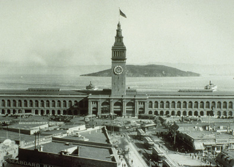
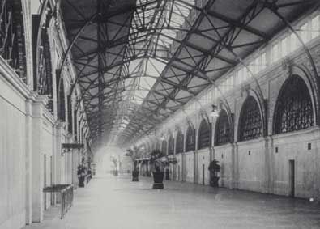
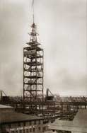
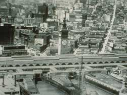

History & Renovation
Ferry Building History
The Ferry Building Marketplace is a people’s marketplace serving residents and travelers alike. Located within the historic Ferry Building at the foot of Market Street, shops large and small celebrate food in all its forms, offering everything from artisan cheeses to the freshest of local fish. Restaurants and cafés serve cuisine representing the quality and cultural diversity of San Francisco’s best chefs.
Opening in 1898 on the site of the 1875 wooden Ferry House, the Ferry Building became the transportation focal point for anyone arriving by train from the East, as well as from all the East Bay and Marin residents who worked in the city. From the Gold Rush until the 1930s, arrival by ferryboat became the only way travelers and commuters—except those coming from the Peninsula—could reach the city.
In 1892, a bond issue to build a new Ferry Building was passed by the voters of California. A young architect named A. Page Brown drew up plans for a large, steel-framed building. His original proposal was for an 840-foot-long building. However, when the construction estimates came in for the foundation (of pilings and concrete arches) the actual length had to be reduced to 660 feet by removing planned twin entrances at either end. As it was, Brown’s foundation—which has supported the entire steel-framed structure in such a remarkably dependable manner through two earthquakes (1906 and 1989)—became the largest such foundation for a building over water anywhere in the world.
Brown included a 245-foot-tall clock tower modeled after the 12th century bell tower in the Seville Cathedral in Spain to serve as a welcoming beacon on the Bay. Construction was started in 1896, and the Union Depot and Ferry House—quickly shortened by public use to the Ferry Building—received its first scheduled arrival in July 1898. Passengers off the boats passed through an elegant two-story public area with repeating interior arches and overhead skylights. At its peak, as many as 50,000 people a day commuted by ferry.
The opening of the Bay Bridge in 1936, and the Golden Gate Bridge in 1937, along with mass use of the automobile, rendered the daily commute by ferryboat obsolete. By the 1950s, the Ferry Building was used very little. The historic interior of the Ferry Building structure, with its mosaic floor and dramatic brick and ceramic arches, was lost in 1955, when much of the large open hall was filled in to accommodate standard office space with some retail use and general public use on the ground floor. To cast the once prominent structure into further obscurity, the double-deck Embarcadero Freeway was built across the face of the Ferry Building in 1957, and remained for 35 years.
 By the 1970s, automobile traffic overwhelmed thoroughfares in and out of the city. Marin ferry service resumed to provide transportation alternatives. In 1989, the Loma Prieta Earthquake caused extensive damage to the Embarcadero Freeway, providing the impetus to tear it down in 1991. The Ferry Building and the central waterfront were once again visible and ready to embrace a bright future.
By the 1970s, automobile traffic overwhelmed thoroughfares in and out of the city. Marin ferry service resumed to provide transportation alternatives. In 1989, the Loma Prieta Earthquake caused extensive damage to the Embarcadero Freeway, providing the impetus to tear it down in 1991. The Ferry Building and the central waterfront were once again visible and ready to embrace a bright future.
 Today ferry terminals operate at Larkspur, Sausalito, Vallejo, and Alameda with plans for continuing network improvements and expansion. Extensive renovation of the Ferry Building is now complete. The Ferry Building redevelopment represents approximately 65,000 square feet of first floor Marketplace space, and an additional 175,000 square feet of premium second and third floor office space. The Marketplace, organized along the central Nave, provides a distinctive space for bringing together the greater Bay Area’s agricultural wealth and renowned specialty food purveyors under one roof. The exterior and main public hall have been restored to their original grandeur for use by ferry passengers and the public at large.
Today ferry terminals operate at Larkspur, Sausalito, Vallejo, and Alameda with plans for continuing network improvements and expansion. Extensive renovation of the Ferry Building is now complete. The Ferry Building redevelopment represents approximately 65,000 square feet of first floor Marketplace space, and an additional 175,000 square feet of premium second and third floor office space. The Marketplace, organized along the central Nave, provides a distinctive space for bringing together the greater Bay Area’s agricultural wealth and renowned specialty food purveyors under one roof. The exterior and main public hall have been restored to their original grandeur for use by ferry passengers and the public at large.
This preservation project has molded the best of the Ferry Building's former glory, with the most innovative of today's office and retail offerings. In staying true to the original detail of the project, Equity Office and Wilson Meany Sullivan have restored the Ferry Building to its original grandeur and returned it to the city as one of San Francisco's most cherished landmarks.